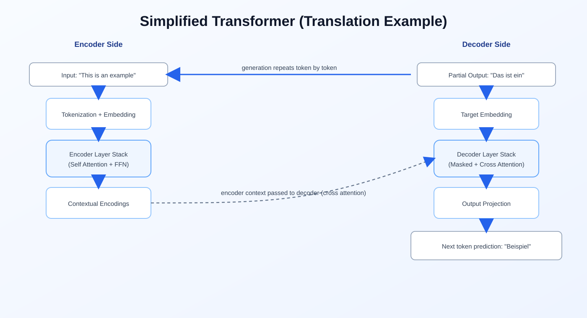
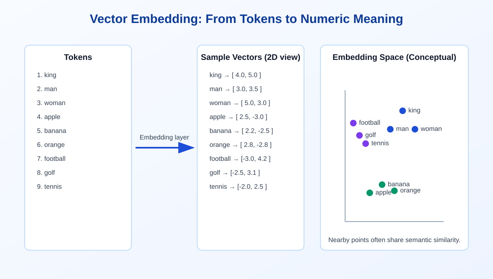
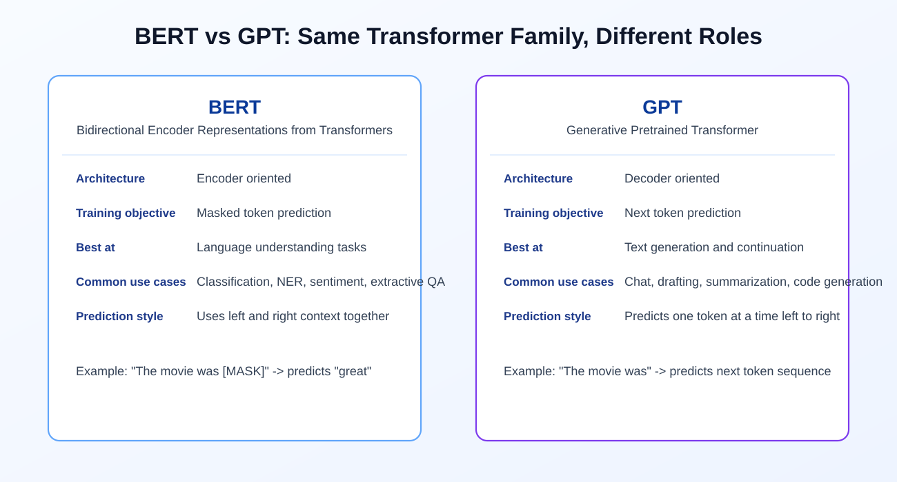
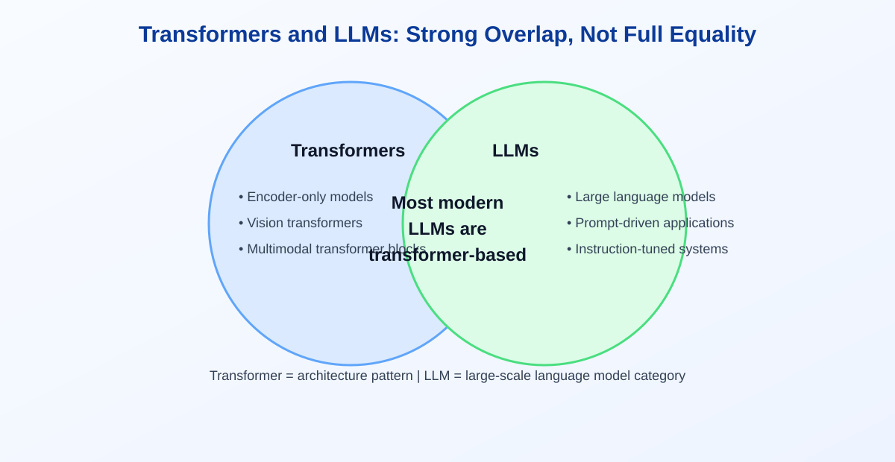

Transformers to LLMs: The Mental Model I Wish I Had Earlier
I used to mix up three terms all the time: transformer, embedding, and LLM. Once I mapped them to one practical pipeline, everything became easier to reason about. This page walks through that same pipeline in simple words.
Why Transformers Became the Default for NLP
Older sequence models like RNNs and LSTMs process text in strict order, token by token. They can work, but they struggle with long context and parallel training. Transformers changed that by using attention, which lets the model decide which words matter for each token.
What improved in practice:
- Better handling of long-range dependencies
- Faster training through parallelism
- Much stronger transfer learning at scale

The Simplified Encoder-Decoder Flow
If you think in translation terms, the architecture is easier to remember:
- Input sentence is tokenized.
- Tokens are converted to embeddings.
- Encoder produces contextual representations.
- Decoder generates target text one token at a time.
- Output layer maps decoder state to vocabulary probabilities.
Example generation for translation:
- Source: "This is an example"
- Step 1: "Das"
- Step 2: "Das ist"
- Step 3: "Das ist ein"
- Step 4: "Das ist ein Beispiel"
What Embeddings Actually Do
A model cannot work with raw words directly. It needs vectors.
An embedding layer maps each token ID to a dense numeric vector. During training, these vectors adjust so semantically related words tend to sit closer in vector space.

Encoder vs Decoder in One Line Each
Encoder
Builds contextual understanding of the input sequence.
Decoder
Generates output tokens using context plus previously generated tokens.
BERT vs GPT: Same Family, Different Job
BERT (encoder-focused)
- Uses bidirectional context
- Common pretraining objective: masked token prediction
- Strong for understanding tasks: classification, sentiment analysis, NER, extractive QA
GPT (decoder-focused)
- Uses next-token prediction
- Naturally suited to generation
- Strong for drafting, summarization, chat, and code completion

Transformer vs LLM: Not the Same Term
- Transformer is an architecture pattern.
- LLM is a large-scale language model category.
That means many LLMs are transformer-based, but not every transformer model is an LLM. Transformers are also used in vision and multimodal systems.

Practical Checklist for New Learners
When reading a model card or paper, ask these first:
- Is it encoder-only, decoder-only, or encoder-decoder?
- What is the training objective?
- How is tokenization handled?
- What context length is supported?
- Is the main use case understanding-heavy or generation-heavy?
Key Takeaway
The easiest way to remember this: transformer is the architecture, embeddings are the numeric representation layer, and LLM is the large-scale language application built on top.